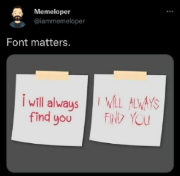
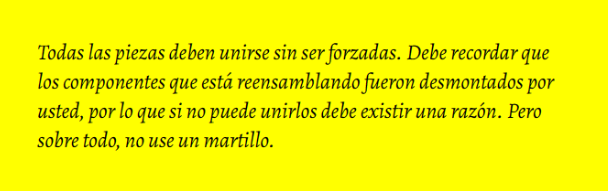

PRACTICA 1
Indice
format_color_text
Formato de Texto
Negrita
Palabra clave relativamente importante para mi
ITALICA O CURSIVA
Las tendencias mas cool del verano
Parafraseando a Einstein Dios no juega a los dados
Benito le dijo a Manuel queera un campeon
SUBRAYADO Y TACHADO
Esto es un texto subrayado
El hombre llego a la luna en 19701969
special_character
Caracteristicas Especiales
- ;
- navigate_before
- >
- &
- `
- "
- \
- /
- ©
-
- €
Espacios en Blanco
El espacio en blanco se codifica como (NoBreakSPace)
Hola que tal
Hola que tal
Hola que tal
Hola que tal
Hola que tal
list
Listas
Lista Numerica
- Fugiat exercitation sint in proident non culpa dolor esse deserunt fugiat.
- Tempor culpa laborum quis quis laborum consequat labore quis fugiat labore elit pariatur.
- Eu laboris in deserunt aute enim qui ut aliquip deserunt velit qui eiusmod voluptate elit.
- ...
Lista No Numerada
- Laboris consequat aute veniam ut ullamco ad aliqua culpa laborum ipsum dolor qui.
- Aute magna adipisicing nulla eu id consequat ut.
- Aliquip occaecat duis occaecat fugiat nisi.
Lista Anidada
Ejemplo 1 - Protocolos de la capa de aplicacion
-
Transimision de ficheros
-
Correo electrónico
Ejemplo 2 - Indice
-
La Comunicacion
- Conceptos
- Elementos de un sistema d comunicacion
- Modos de transmision
-
Concepto de Red. Ventajas
- Concepto de red
- Ventajas de las redes
-
Topologias de Red
- Topologia en estrella
- Topologia en bus
- Topologia en anillo
- Topologia en arbol (estrella jerarquica)
- Topoogia en malla
Ejemplo 3 - Mixto
-
Mamiferos
-
Pajaros
-
Peces
image
Imagen Centrada

format_quote
Cita Célebre

Manual de mantenimiento de IBM, año 1925